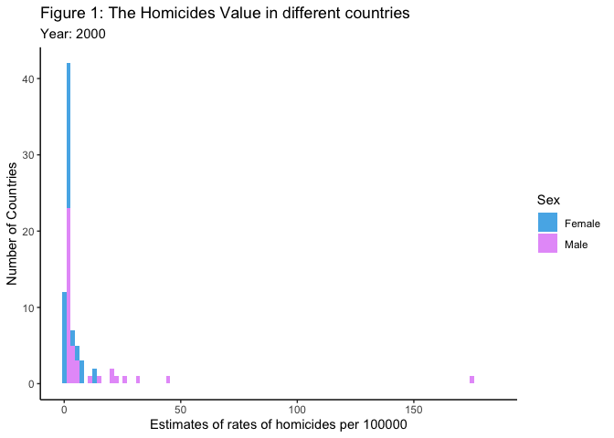
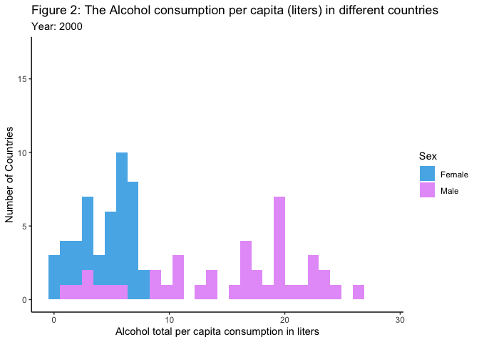
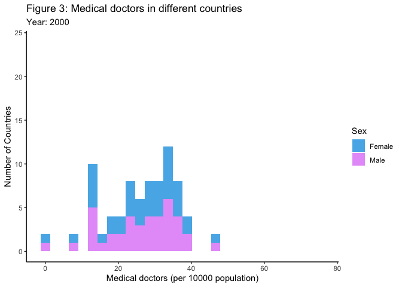
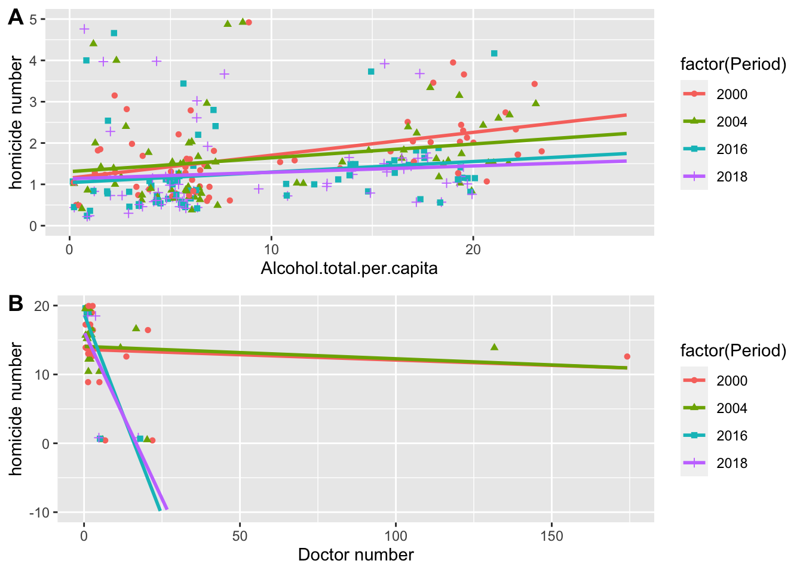

The first steps for this statistical report is to collect data that we would like to analyze and draw conclusions, then explore and clean the data collected to make sure that it fits our requirements for further analysis.
To collect the data of rates of homicides per 100,000 population, we simply need to navigate to the Global Health Observatory site from the WHO home website, and then click on “indicators” and search for this dataset. On the WHO website for this dataset, there are also visualizations, data previews, metadata information and related indicators to give a general information of this dataset. We can directly download the dataset from WHO’s website as a .csv file and then read this data into R using the tidyverse library.
Homicides table, which is shown below, demonstrates the top 6 rows of the homicide number data which were loaded into R from the downloaded homicides.csv file from WHO’s website. This dataset contains estimates of homicides rate (per 100,000 population) from 2000 to 2019, and includes estimates for male, female and both sexes total for each country around the world. This dataset contains 10980 observations each of 34 variables, including information of the location of country (Location), the time period (Period), the estimates of homicides rate (per 100,000 population) (FactValueNumeric) together with a lower bound (FactValueNumericLow) and an upper bound (FactValueNumericHigh) of this estimate., as well as the sex corresponding to each estimate (Dim1) with values “Female”, “Male” or “Both sexes”.
| IndicatorCode | Indicator | ValueType | ParentLocationCode | ParentLocation | Location.type | SpatialDimValueCode | Location | Period.type | Period | IsLatestYear | Dim1.type | Dim1 | Dim1ValueCode | Dim2.type | Dim2 | Dim2ValueCode | Dim3.type | Dim3 | Dim3ValueCode | DataSourceDimValueCode | DataSource | FactValueNumericPrefix | FactValueNumeric | FactValueUoM | FactValueNumericLowPrefix | FactValueNumericLow | FactValueNumericHighPrefix | FactValueNumericHigh | Value | FactValueTranslationID | FactComments | Language | DateModified |
|---|---|---|---|---|---|---|---|---|---|---|---|---|---|---|---|---|---|---|---|---|---|---|---|---|---|---|---|---|---|---|---|---|---|
| VIOLENCE_HOMICIDERATE | Estimates of rates of homicides per 100 000 population | numeric | WPR | Western Pacific | Country | JPN | Japan | Year | 2019 | TRUE | Sex | Female | FMLE | NA | NA | NA | NA | NA | NA | NA | NA | NA | 0.18 | NA | NA | 0.160 | NA | 0.20 | 0.18 [0.16 – 0.2] | NA | NA | EN | 2021-02-09T05:00:00.000Z |
| VIOLENCE_HOMICIDERATE | Estimates of rates of homicides per 100 000 population | numeric | EMR | Eastern Mediterranean | Country | ARE | United Arab Emirates | Year | 2019 | TRUE | Sex | Female | FMLE | NA | NA | NA | NA | NA | NA | NA | NA | NA | 0.21 | NA | NA | 0.088 | NA | 0.42 | 0.21 [0.088 – 0.42] | NA | NA | EN | 2021-02-09T05:00:00.000Z |
| VIOLENCE_HOMICIDERATE | Estimates of rates of homicides per 100 000 population | numeric | WPR | Western Pacific | Country | JPN | Japan | Year | 2019 | TRUE | Sex | Both sexes | BTSX | NA | NA | NA | NA | NA | NA | NA | NA | NA | 0.21 | NA | NA | 0.190 | NA | 0.23 | 0.21 [0.19 – 0.23] | NA | NA | EN | 2021-02-09T05:00:00.000Z |
| VIOLENCE_HOMICIDERATE | Estimates of rates of homicides per 100 000 population | numeric | WPR | Western Pacific | Country | SGP | Singapore | Year | 2019 | TRUE | Sex | Female | FMLE | NA | NA | NA | NA | NA | NA | NA | NA | NA | 0.22 | NA | NA | 0.170 | NA | 0.29 | 0.22 [0.17 – 0.29] | NA | NA | EN | 2021-02-09T05:00:00.000Z |
| VIOLENCE_HOMICIDERATE | Estimates of rates of homicides per 100 000 population | numeric | WPR | Western Pacific | Country | JPN | Japan | Year | 2019 | TRUE | Sex | Male | MLE | NA | NA | NA | NA | NA | NA | NA | NA | NA | 0.24 | NA | NA | 0.220 | NA | 0.26 | 0.24 [0.22 – 0.26] | NA | NA | EN | 2021-02-09T05:00:00.000Z |
| VIOLENCE_HOMICIDERATE | Estimates of rates of homicides per 100 000 population | numeric | WPR | Western Pacific | Country | SGP | Singapore | Year | 2019 | TRUE | Sex | Both sexes | BTSX | NA | NA | NA | NA | NA | NA | NA | NA | NA | 0.25 | NA | NA | 0.200 | NA | 0.32 | 0.25 [0.2 – 0.32] | NA | NA | EN | 2021-02-09T05:00:00.000Z |
The number of medical doctors dataset can be collected also from WHO’s official website. After navigating to the Global Health Observatory page, we can search for the theme of Global Health Workforce statistics and directly download the number of medical doctors for each country from the year 2000 - 2021 in a .csv format from the website. Then, this .csv file is also loaded into R using the tidyverse library.
Doctor table shown below contains the first 6 rows of the number of medical doctors in each country dataset which were loaded into R from the downloaded .csv file. This dataset contains estimates of each country’s number of medical doctors per 10,000 population from the year 2000 to 2019. This dataset contains 2903 observations of 34 variables, including information of the continent or region location (ParentLocation) of each estimate, the country location (Location) of each estimate, the time period (Period), the estimates of the number of medical doctors per 10,000 population (FactValueNumeric).
| IndicatorCode | Indicator | ValueType | ParentLocationCode | ParentLocation | Location.type | SpatialDimValueCode | Location | Period.type | Period | IsLatestYear | Dim1.type | Dim1 | Dim1ValueCode | Dim2.type | Dim2 | Dim2ValueCode | Dim3.type | Dim3 | Dim3ValueCode | DataSourceDimValueCode | DataSource | FactValueNumericPrefix | FactValueNumeric | FactValueUoM | FactValueNumericLowPrefix | FactValueNumericLow | FactValueNumericHighPrefix | FactValueNumericHigh | Value | FactValueTranslationID | FactComments | Language | DateModified |
|---|---|---|---|---|---|---|---|---|---|---|---|---|---|---|---|---|---|---|---|---|---|---|---|---|---|---|---|---|---|---|---|---|---|
| HWF_0001 | Medical doctors (per 10,000) | numeric | AFR | Africa | Country | TCD | Chad | Year | 2021 | true | NA | NA | NA | NA | NA | NA | NA | NA | NA | NA | NA | NA | 0.58 | NA | NA | NA | NA | NA | 0.58 | NA | EN | 2023-01-12T05:00:00.000Z | |
| HWF_0001 | Medical doctors (per 10,000) | numeric | AFR | Africa | Country | TGO | Togo | Year | 2021 | true | NA | NA | NA | NA | NA | NA | NA | NA | NA | NA | NA | NA | 0.59 | NA | NA | NA | NA | NA | 0.59 | NA | EN | 2023-01-12T05:00:00.000Z | |
| HWF_0001 | Medical doctors (per 10,000) | numeric | WPR | Western Pacific | Country | PNG | Papua New Guinea | Year | 2021 | true | NA | NA | NA | NA | NA | NA | NA | NA | NA | NA | NA | NA | 0.63 | NA | NA | NA | NA | NA | 0.63 | NA | EN | 2023-01-12T05:00:00.000Z | |
| HWF_0001 | Medical doctors (per 10,000) | numeric | AFR | Africa | Country | BDI | Burundi | Year | 2021 | true | NA | NA | NA | NA | NA | NA | NA | NA | NA | NA | NA | NA | 0.65 | NA | NA | NA | NA | NA | 0.65 | NA | EN | 2023-01-12T05:00:00.000Z | |
| HWF_0001 | Medical doctors (per 10,000) | numeric | AFR | Africa | Country | MOZ | Mozambique | Year | 2021 | true | NA | NA | NA | NA | NA | NA | NA | NA | NA | NA | NA | NA | 0.81 | NA | NA | NA | NA | NA | 0.81 | NA | EN | 2023-01-12T05:00:00.000Z | |
| HWF_0001 | Medical doctors (per 10,000) | numeric | AFR | Africa | Country | CMR | Cameroon | Year | 2021 | true | NA | NA | NA | NA | NA | NA | NA | NA | NA | NA | NA | NA | 1.24 | NA | NA | NA | NA | NA | 1.24 | NA | EN | 2023-01-12T05:00:00.000Z |
The WHO’s alcohol consumption dataset can be directly downloaded from HW2 as a .csv file and loaded into R using the tidyverse library. Alcohol table shown below contains the first 6 rows of the WHO alcohol consumption in each country dataset which were loaded into R from the downloaded .csv file. This dataset contains estimates of each country’s alcohol consumption in liters per capita from 2000 to 2019, including the WHO Region of the country (WHO.Region), the country name (Country), the year of the estimation (Year), sex of the estimation (Sex) with values “Both sexes”, “Female” or “Male, as well as the estimates of alcohol consumption in liters per capita including a low and high estimation and a string representation.
| WHO.Region.Code | WHO.Region | Country.Code | Country | Year | Sex | Alcohol.total.per.capita..15…consumption.in.liters..numeric. | Alcohol.total.per.capita..15…consumption.in.liters..low.estimation. | Alcohol.total.per.capita..15…consumption.in.liters..high.estimation. | Alcohol.total.per.capita..15…consumption.in.liters..string. |
|---|---|---|---|---|---|---|---|---|---|
| SEAR | South-East Asia | BGD | Bangladesh | 2019 | Both sexes | 0 | 0 | 0 | 0 [0 – 0] |
| SEAR | South-East Asia | BGD | Bangladesh | 2019 | Female | 0 | 0 | 0 | 0 [0 – 0] |
| SEAR | South-East Asia | BGD | Bangladesh | 2019 | Male | 0 | 0 | 0 | 0 [0 – 0] |
| EMR | Eastern Mediterranean | KWT | Kuwait | 2019 | Both sexes | 0 | 0 | 0 | 0 [0 – 0] |
| EMR | Eastern Mediterranean | KWT | Kuwait | 2019 | Female | 0 | 0 | 0 | 0 [0 – 0] |
| EMR | Eastern Mediterranean | KWT | Kuwait | 2019 | Male | 0 | 0 | 0 | 0 [0 – 0] |
Firstly, I would check if there is any NA valued data in the dataset and keep only the necessary data columns needed for this project in the homicides table (Table 1), doctor table (Table 2), and alcohol table (Table 3). Since some columns contain NA values in all the rows in the doctor table and homicides table, I deleted those columns. Besides, for the convenience of reading and understanding the dataset, we need to change the column names in homicides table, doctor table and alcohol table to make them more readable.
Before merging all data, the three tables with top 6 rows are shown below:
homicides table (after cleaning):
| ParentLocation | Location | Period | Sex | AverageValue | |
|---|---|---|---|---|---|
| 1 | Western Pacific | Japan | 2019 | Female | 0.18 |
| 2 | Eastern Mediterranean | United Arab Emirates | 2019 | Female | 0.21 |
| 4 | Western Pacific | Singapore | 2019 | Female | 0.22 |
| 5 | Western Pacific | Japan | 2019 | Male | 0.24 |
| 7 | Eastern Mediterranean | Qatar | 2019 | Female | 0.26 |
| 8 | Eastern Mediterranean | Bahrain | 2019 | Female | 0.28 |
alcohol table (after cleaning):
| WHO.Region.Code | WHO.Region | Country.Code | Country | Year | Sex | numeric | |
|---|---|---|---|---|---|---|---|
| 2 | SEAR | South-East Asia | BGD | Bangladesh | 2019 | Female | 0 |
| 3 | SEAR | South-East Asia | BGD | Bangladesh | 2019 | Male | 0 |
| 5 | EMR | Eastern Mediterranean | KWT | Kuwait | 2019 | Female | 0 |
| 6 | EMR | Eastern Mediterranean | KWT | Kuwait | 2019 | Male | 0 |
| 8 | AFR | Africa | MRT | Mauritania | 2019 | Female | 0 |
| 9 | AFR | Africa | MRT | Mauritania | 2019 | Male | 0 |
doctor table (after cleaning):
| ParentLocation | Location | Period | FactValueNumeric |
|---|---|---|---|
| Africa | Chad | 2021 | 0.58 |
| Africa | Togo | 2021 | 0.59 |
| Western Pacific | Papua New Guinea | 2021 | 0.63 |
| Africa | Burundi | 2021 | 0.65 |
| Africa | Mozambique | 2021 | 0.81 |
| Africa | Cameroon | 2021 | 1.24 |
Since we need to merge three tables together, we should first merge two tables and then merge the other one.
Firstly, we will merge the homicides table with alcohol table first with the “Location”, “Period”, “Sex”, “ParentLocation” columns and then merge with the medical doctors table with “Location”, “Period”, and “ParentLocation” columns to get the new table called “met2”.
Then, we need to change the column names to the corresponding names of the values.
After merging, the merge table reduced the number of countries and years, and we found out that some countries’ data is not complete from 2000 to 2019 so we removed these countries and only kept those that have complete data from 2000 to 2019. The resulting data has only 40 countries from different continents left, and is called met_40.
| Location | Period | ParentLocation | Sex | Homicides_value | Alcohol_numeric | doctor_num |
|---|---|---|---|---|---|---|
| Australia | 2010 | Western Pacific | Female | 0.88 | 6.14 | 33.64 |
| Australia | 2011 | Western Pacific | Female | 0.89 | 5.95 | 33.14 |
| Australia | 2014 | Western Pacific | Male | 1.39 | 16.72 | 34.50 |
| Australia | 2012 | Western Pacific | Male | 1.77 | 17.64 | 33.11 |
| Australia | 2013 | Western Pacific | Male | 1.39 | 17.16 | 33.74 |
| Australia | 2013 | Western Pacific | Female | 0.82 | 5.58 | 33.74 |
We found out that some of the Asian countries such as China and Korea were mislabeled to Western Pacific by the WHO, so we manually changed their continent label.
After we performed the above cleaning step, there are Asian countries present in the dataset.
From the table below, we can see that there are six continents/regions with 40 countries in the merged dataset met_40. Europe has the most number of countries (29) and most of the other parent locations have 2-3 countries.
| ParentLocation | Total_Countries |
|---|---|
| Africa | 2 |
| Americas | 2 |
| Asia | 2 |
| Eastern Mediterranean | 2 |
| Europe | 29 |
| Western Pacific | 3 |
After the data is cleaned and merged together, we can start to explore the data and plot the histogram for variables of interest and important values. The three histograms below demonstrate the values of the three important variables that we would like to use.
The first histogram shows the frequency distribution of the estimate of rate of homicides (per 100,000 population) by different categories of sexes over all countries in every year from 2000 to 2019.

This animated histogram shows the homicides value in different countries in each year. In this animated histogram, there is a consistent right tail, and as the rates of homicides increase, the number of countries having the female homicides rate equal to this rate decreases, and most countries have the estimated rates of homicide in range [0, 5]. The minimum homicides rate value estimate in the met_40 is 0.003. Since the rate of homicides in some counties is too small and very close to zero, the histogram counts many countries in bin close to zero, but these are not the absolute zero values.
The second histogram shows the frequency of the total alcohol assumption in liters per captia by different sexes over all countries in each year from 2000 to 2019.

From the above animated histogram, the estimate of alcohol consumption of females in each year is more concentrately distributed, and the estimate of alcohol consumption of male in each year is more spread out. The number of countries with estimate female alcohol consumption in range [0, 10] is higher than that of male alcohol consumption. However, in the range beyond 10 liters per capita, there are more countries with estimated male alcohol consumption equal to this rate compared with estimated female alcohol consumption.
The third histogram show the Medical doctors (per 10000 population) over all countries in each year from 2000 to 2019.

Form the above histogram, the plot of the medical doctors(per 10000 population) is symmetric and unimodal. Majority of the countries have 20-40 medical doctors per 10000 population and very few countries have less than 10 or more than 50 medical doctors per 10000 population.
The key question that we are interested in is if there is a correlation between the rate of homicide and the number of medical doctors together with alcohol consumption level in each country from 2000 - 2019.
We can analyze the data in two ways. Firstly, we can compare all data points collected in the same year for different countries around the globe. This analysis can help us understand whether homicide rates is correlated with the number of medical doctors in the same year in various countries.
The table below summarizes the mean and standard devication of the estimates of homicide cases, alcohol consumption, and the number of medical doctors across all countries in each year. We will use the mean values of estimates of homicide cases, alcohol consumption, and the number of medical doctors across all countries to understand the relationship between these three variables.
| Period | mean_homicides | sd_homicides | mean_alcohol | sd_alcohol | mean_doctor | sd_doctor |
|---|---|---|---|---|---|---|
| 2000 | 6.773125 | 20.431623 | 9.827625 | 7.438127 | 26.19575 | 9.693731 |
| 2001 | 6.846625 | 20.869130 | 9.827625 | 7.438127 | 26.51025 | 9.698075 |
| 2002 | 6.798625 | 21.406288 | 9.774375 | 7.410412 | 26.90450 | 9.855484 |
| 2003 | 6.020500 | 16.871013 | 9.798875 | 7.419781 | 27.33025 | 9.877903 |
| 2004 | 5.658250 | 15.780549 | 9.857375 | 7.422888 | 28.08400 | 9.984940 |
| 2005 | 5.355250 | 13.576778 | 9.984750 | 7.480996 | 28.43375 | 10.170166 |
| 2006 | 5.119250 | 13.328287 | 10.022500 | 7.471207 | 28.97975 | 10.345343 |
| 2007 | 4.686500 | 12.376961 | 9.939500 | 7.433821 | 29.48650 | 10.418888 |
| 2008 | 4.725500 | 12.697525 | 9.663375 | 7.243034 | 30.02450 | 10.356815 |
| 2009 | 4.860625 | 14.398560 | 9.427375 | 7.033945 | 30.35650 | 10.480726 |
| 2010 | 4.694913 | 13.900324 | 9.301375 | 6.905815 | 30.69125 | 10.674367 |
| 2011 | 4.613875 | 13.074207 | 9.296500 | 6.897100 | 30.86375 | 10.294248 |
| 2012 | 4.315125 | 12.426179 | 9.232750 | 6.869188 | 31.13350 | 10.228461 |
| 2013 | 4.044000 | 11.573586 | 9.150375 | 6.810679 | 31.70275 | 10.055729 |
| 2014 | 3.726750 | 10.660572 | 9.117625 | 6.755246 | 32.23825 | 9.956507 |
| 2015 | 3.633750 | 10.096940 | 9.121000 | 6.712349 | 32.68800 | 9.971477 |
| 2016 | 3.577625 | 9.971703 | 9.056625 | 6.598502 | 33.35450 | 10.902363 |
| 2017 | 3.642125 | 10.042360 | 8.985500 | 6.487067 | 34.10950 | 10.816740 |
| 2018 | 3.454625 | 9.678705 | 8.944500 | 6.441333 | 34.85250 | 11.796345 |
| 2019 | 3.371000 | 9.488201 | 8.944500 | 6.441333 | 35.76250 | 11.699179 |
| The plot | below contains in | formation of th | e change of the | mean estimat | e of homicide | cases, mean alcohol consumption and mean number of medical doctors over all countries from year 2000 to 2019. |
From the plots above, we can observe that both the mean estimate of rates of homicide, the mean alcohol consumption values and the average number of doctors in each country are fairly consistent over the years from 2000 to 2019. The mean estimate of rates of homicide as well as the mean estimate of the rate of alcohol consumption decrease over the years while the average number of doctors (per 10000) in each country increases. From this plot, we can see that the rate of homicide and rate of alcohol consumption might have a positive correlation, whilethe rate of homicide and the number of medical doctors (per 10000) might be negatively correlated. However, we cannot correctly judge whether alcohol consumption values and number of medical doctors are correlated with the number of homicide cases.
So we zoom in in to more specific year 2000, 2009, 2016, and 2018

That is why we need to focus on specific years and analyze if there is a trend between the number of homicide cases estimated and the number of medical doctors or alcohol consumption levels in different countries. Instead of using the mean value of the data points, we will analyze using individual data points collected for each country in these specific years.
The plot A above demonstrates the relationship between the number of alcohol consumption per capita in each country and the number of homicide cases for the years 2000, 2004, 2016, 2018. From the plot, we can see that in all four years, the country with higher alcohol consumption level corresponds to a higher homicide case number estimate, and we can infer that the number of homicide cases is positively correlated with the number of alcohol consumption per capita of each year.
The plot B above demonghstrates the relationship between the number of medical doctors in each country and the number of homicide cases for the years 2000, 2004, 2016, 2018. From the plot, we can see that in all four years, the country with higher number of medical doctors has a lower homicide rate estimate, especially in the year 2016 and 2018 there are steep negative relationships between the number of medical doctors and the homicide rate estimate. From this plot, we can infer that the rate of homicide is negatively correlated with the number of alcohol consumption per capita of each year.
Both observations from the two plots align with our intuition.
The second way to fit a data model in the merged data set is to first build a model on the estimate rate of the homicide cases. Then, after finding a fittable model, we can test the accuracy of the model in one specific country over the years from 2000 to 2019.
## Analysis of Variance Table
##
## Model 1: Homicides_value ~ doctor_num
## Model 2: Homicides_value ~ Alcohol_numeric + doctor_num
## Res.Df RSS Df Sum of Sq F Pr(>F)
## 1 1598 308510
## 2 1597 303161 1 5349.3 28.179 1.261e-07 ***
## ---
## Signif. codes: 0 '***' 0.001 '**' 0.01 '*' 0.05 '.' 0.1 ' ' 1## Alcohol_numeric doctor_num
## 1.087408 1.087408From the ANOVA table we find out that the F-statistic is 28.179 and p-value is 1.261e-07. We found out that there is a small p-value and a large F value, so we can adopt the model 2. Also from the code above, all VIF factors are 1.087 which are less than 5, so there is no multicollinearity. Hence we will use the full model on specific countries to test the model accuracy.
##
## Call:
## lm(formula = Homicides_value ~ Alcohol_numeric + doctor_num,
## data = Korea)
##
## Residuals:
## Min 1Q Median 3Q Max
## -0.30049 -0.08934 0.01125 0.06537 0.31713
##
## Coefficients:
## Estimate Std. Error t value Pr(>|t|)
## (Intercept) 2.334678 0.159508 14.64 < 2e-16 ***
## Alcohol_numeric 0.065464 0.004588 14.27 < 2e-16 ***
## doctor_num -0.085848 0.007243 -11.85 3.67e-14 ***
## ---
## Signif. codes: 0 '***' 0.001 '**' 0.01 '*' 0.05 '.' 0.1 ' ' 1
##
## Residual standard error: 0.1528 on 37 degrees of freedom
## Multiple R-squared: 0.9241, Adjusted R-squared: 0.92
## F-statistic: 225.4 on 2 and 37 DF, p-value: < 2.2e-16##
## Call:
## lm(formula = Homicides_value ~ Alcohol_numeric + doctor_num,
## data = spain)
##
## Residuals:
## Min 1Q Median 3Q Max
## -0.44959 -0.07930 0.01418 0.11683 0.40312
##
## Coefficients:
## Estimate Std. Error t value Pr(>|t|)
## (Intercept) 3.21171 0.37316 8.607 2.32e-10 ***
## Alcohol_numeric 0.05716 0.00491 11.641 6.23e-14 ***
## doctor_num -0.08047 0.01002 -8.034 1.25e-09 ***
## ---
## Signif. codes: 0 '***' 0.001 '**' 0.01 '*' 0.05 '.' 0.1 ' ' 1
##
## Residual standard error: 0.2024 on 37 degrees of freedom
## Multiple R-squared: 0.8484, Adjusted R-squared: 0.8402
## F-statistic: 103.5 on 2 and 37 DF, p-value: 6.971e-16From the summary of the model for country Korea, we can see the R-squared is 92.41% and for the country Spain, we can see that the R-squared is 85%, which are both very high and implies that the prediction accuracy would be very high.